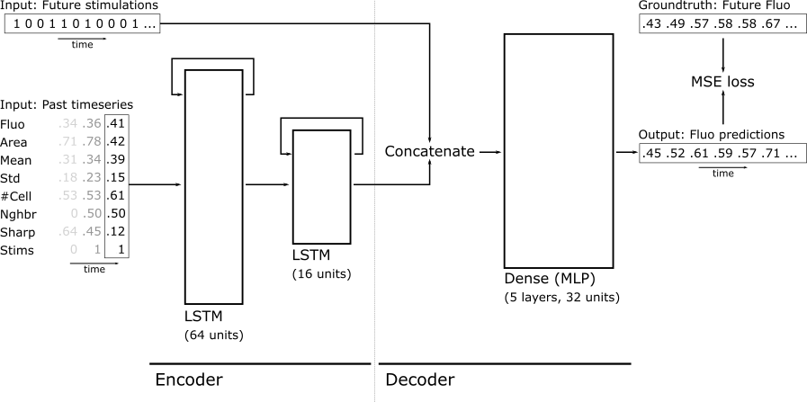

Neural Network Models¶
There is essentially a single encoder-decoder neural network, defined by
lstm_mlp in the models module.

The encoder part of the model consists in two successive LSTM layers that compact the normalized past timeseries of N timesteps x 8 features into a latent vector of 32 elements (16 units w/ cell state + hidden state).
This 32-dimensional vector is then concatenated with the timeseries of future optogenetic stimulations (which can have 12, 24, 36, or 48 elements depending on the prediction horizon). This concatenated vector is then fed as input to the decoder part of the model, and MLP with 5 layers of 32 neurons.
During training, the output of this whole network is trained against the know response of the cell. However, when running the model predictive control framework, the past of the cell only needs to be encoded once, while the decoder needs to predict the cell response against hundreds or thousands of potential future optogenetic stimulations. For this reason, the module also contains model definitions and utility functions that are used to split the trained encoder-decoder model into its encoder and decoder components, so that they can run independently.
The reason why the encoder is based on LSTM layers while the decoder is an MLP is because LSTMs are better suited for timeseries, and can handle any timeseries length, but their computation can not be efficiently parallelized. On the other hand, MLPs can be parallelized efficiently. Since the encoder needs to be run only once per cell while the decoder needs to run 100s of time per cell, we opted for this compromise.